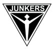
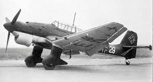
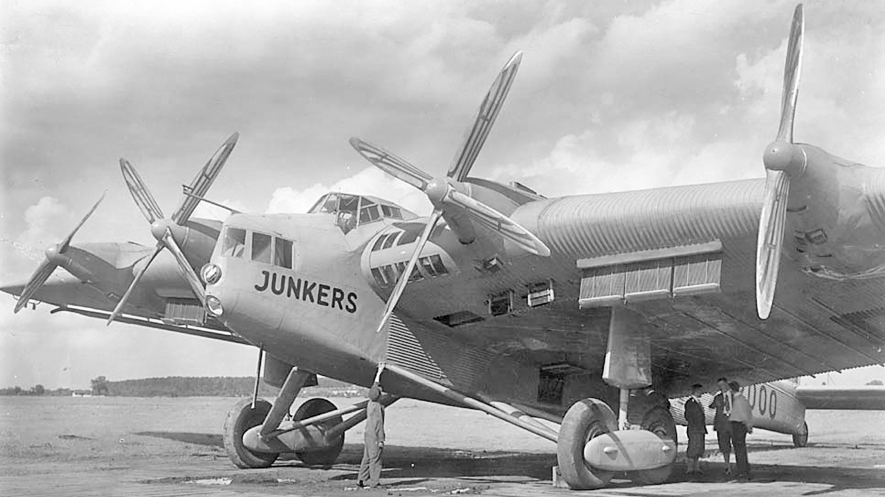

Немецкая марка Junkers была основана в 1895 году талантливым профессором термодинамики Ахенского университета Хуго Юнкерсом в городе Дессау. Компания являлась крупным производителем газоотопительных котлов, охладителей и вентиляторного оборудования. С началом Первой мировой войны компания приступила к авиастроению. С течением времени она заняла лидирующие позиции в области авиастроения Германии, внедрив многочисленные инновационные конструкции и разработки, внесшие значительный вклад в историю мировой авиации. Самолеты Юнкерс стали одними из лучших на мировом рынке.
 
После окончания Второй мировой войны компания Junkers перестала производить самолеты, но штаб-квартира по прежнему осталась в городе Дессау. На сегодня марка выпускает часы Junkers (Юнкерс) со сложными механизмами и сувениры в виде макетов самолетов. Многочисленные коллекции компании 150 Years Hugo Junkers, 1st Atlantic Flight, East-West, World Flight Record G38, Himalaya Pearls Lady отличаются высокотехнологичными материалами и традиционным классическим дизайном. Разнообразные модели наручных часов Junkers (Юнкерс), стилизованные под корпуса ранее выпускаемых самолетов или их кокпиты, максимально усложненные хронографы или очень простые часы с циферблатами, выполненными в минималистическом стиле, - вот те черты, ярко характеризирующие всю продукцию компании Junkers.